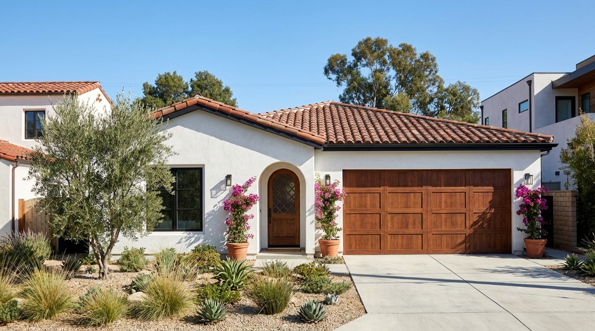
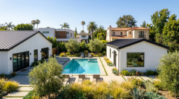
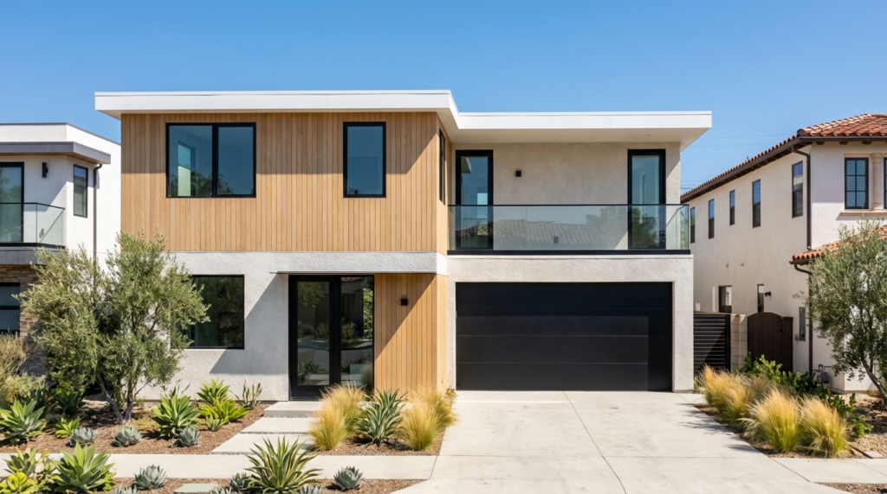

Fire Rebuild
Altadena Residence
Main residence plus matching ADU, built on the 4C SAFE® system as part of our Eaton Fire rebuild program.

Fire Rebuild · Spanish Revival
Altadena Residence No. 2
A Spanish Revival-style rebuild with a matching ADU, using the same 4C SAFE® panel system.

Accessory Dwelling Unit
Altadena ADU
A standalone accessory dwelling unit built on the 4C SAFE® system.

Single-Family
Los Angeles Residence
A single-family home with office and 2-car garage, delivered on the 4C platform. See how both 4C systems compare for projects like this one.

Single-Family · 4C ECO™
Escondido Residence
A single-family home with office and carport, built on the 4C ECO™ system for balanced cost and thermal performance.

Single-Family · First 4C SAFE® Build
Borrego Springs Residence
Our first-ever 4C SAFE® installation, proving the system's speed and precision in the field. Watch the assembly time-lapse below.